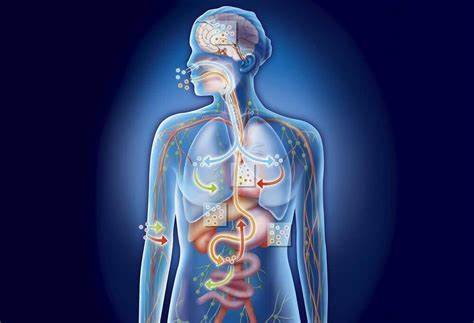

inicio
homeostasis

Te explicamos qué es la homeostasis y algunos ejemplos de este equilibrio. Además, los tipos de homeostasis y por qué es importante.
¿que es la homeostasis?
La homeostasis es el equilibrio que se produce en un medio interno. También conocido como “homeostasia”, consiste en la tendencia que posee cualquier sistema, incluyendo los seres vivos, a adaptarse a los cambios y mantener un ambiente interno estable y constante.
La homeostasis se caracteriza por su continuidad, para lo cual necesita de los procesos de registro y regulación de diversos parámetros. Además, su eficiencia varía a lo largo del paso del tiempo en los seres vivos.
En los organismos, la homeostasis depende tanto del medio externo (el vínculo entre el ser vivo y el medio ambiente en el que se encuentra) como del medio interno (la generación y eliminación de determinadas sustancias o desechos).
ejemplos de homeostasis
Los procesos de homeostasis se observan ante diversas situaciones, como por ejemplo:
-
Transpiración. En este proceso se registra la secreción de sustancias líquidas sobre la piel. La evaporación de esas sustancias ayuda a refrescar al organismo y a reducir el incremento de la temperatura interna.
-
respiracion.Como la respiración es una actividad involuntaria, el sistema nervioso debe intervenir para mantener su equilibrio. Así se garantizan los niveles de oxígeno que el organismo necesita para mantenerse con vida.
-
huir de sol Ante una exposición solar extrema que puede registrarse, por ejemplo, en un desierto, los animales de sangre fría se refugian en espacios frescos. Esta respuesta ayuda a disminuir la temperatura corporal.
-
regulacion de la presion arterial.En este caso, el equilibrio se produce a partir de una señal que el corazón le envía al cerebro luego de detectar algún cambio en la presión arterial. Si la presión es muy baja, el corazón deberá acelerarla mientras que si es muy alta, deberá disminuirla.
-
aceleracion de la respiracionEste proceso tiene como objetivo incrementar la cantidad de aire respirado. Esto se activa, por ejemplo, cuando una persona hace actividad física o deporte, lo cual reduce los niveles de oxígeno en sangre. También puede ponerse en marcha cuando el organismo se encuentra inmerso en un ambiente con baja concentración de oxígeno. Durante este proceso de equilibro no solo se acelera la respiración sino que también aumenta la velocidad de los latidos del corazón y sube la presión sanguínea. Todo esto mejora la irrigación de la sangre oxigenada.
-
mantenimiento de los niveles de glucosa.En este caso, el proceso de equilibrio aspira a mantener los niveles de glucosa adecuados para que el ser humano permanezca sano. Ante niveles muy elevados de glucosa, el páncreas libera insulina mientras que si esos niveles se encuentran muy bajos, el hígado transforma el glucógeno de la sangre en glucosa.
-
niveles de agua. En los seres vivos el agua representa un porcentaje importante de su composición, por lo que mantener su equilibrio es vital. Su equilibrio se mantiene para evitar que el exceso de agua haga explotar a las células o que, por falta de agua, esas mismas células reduzcan su tamaño.
-
regulacion del ph sanguineoLa homeostasis se produce, en este caso, a partir del desecho de ácidos que ponen en peligro el nivel adecuado de acidez en sangre. El desecho se genera a través del control bioquímico y de diferentes sistemas de vigilancia.
-
temblor. Este proceso de homeostasis se produce cuando el organismo registra una baja en la temperatura ambiental, que se contrarresta con un temblor de la musculatura.
-
sistema urinario. Este sistema es el que se encarga de eliminar, a través de la orina, las toxinas en sangre que afectan a la homeostasis.
- activacion del sistema linfatico
-
exposicion del solEste proceso de homeostasis se registra en los reptiles, que carecen de la capacidad de regular su temperatura interna de manera autónoma. Por esta incapacidad, los animales de sangre fría se exponen al sol y eso los ayuda a energizar sus metabolismos y a aumentar su temperatura corporal.
-
control de calcioEn este proceso de equilibrio las paratiroides liberan hormonas para incrementar los niveles de calcio, y para reducirlo fijan el calcio en los huesos.
tipos de homeostasis
Frente a las interacciones que el organismo mantiene con el medio ambiente en el que se encuentra, se pueden identificar tres tipos de respuestas:
-
regulacionAnte una modificación en el ambiente, el organismo dispara acciones compensatorias para mantener el ambiente interno medianamente constante.
-
evitacion Este proceso de equilibrio busca reducir el impacto de las transformaciones del ambiente en el organismo a través de mecanismos de escape comportamental para evitar cambios ambientales temporales o ambientales.
-
conformidad. Durante este proceso de equilibrio, el organismo cambia a la par de las modificaciones que se registran en el medio ambiente.
importancia de la homeostais
Gracias a que la homeostasis aspira a la búsqueda del equilibrio es que los organismos no entran en estado de entropía, es decir, de caos.
Si los procesos de homeostasis por algún motivo fallan, se produce la enfermedad o muerte del organismo. Si el organismo no logra mantener sus parámetros biológicos dentro de los límites de la normalidad, se produce una enfermedad que puede derivar en la muerte del organismo en cuestión.